<!DOCTYPE lake>
<p data-lake-id="ub53b4ef6" id="ub53b4ef6"><span data-lake-id="uc0e80d1f" id="uc0e80d1f">​</span>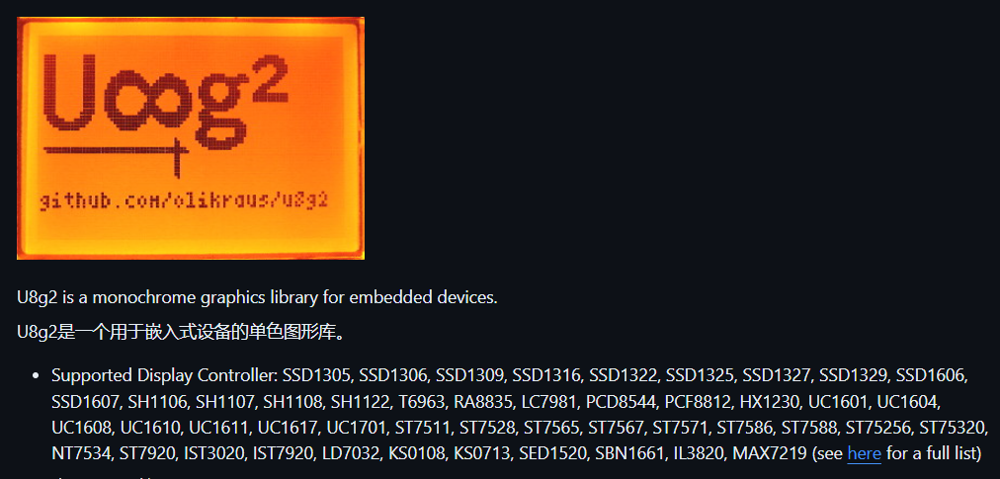</p><h2 data-lake-id="RLj7W" id="RLj7W"><span data-lake-id="ue033fa17" id="ue033fa17">修改源代码</span></h2><p data-lake-id="u396c4fa2" id="u396c4fa2"><a data-lake-id="u7fc3d94f" href="https://github.com/olikraus/u8g2" id="u7fc3d94f" rel="noopener noreferrer" target="_blank"><span data-lake-id="ubfeaec48" id="ubfeaec48">https://github.com/olikraus/u8g2</span></a></p><p data-lake-id="u406a8194" id="u406a8194">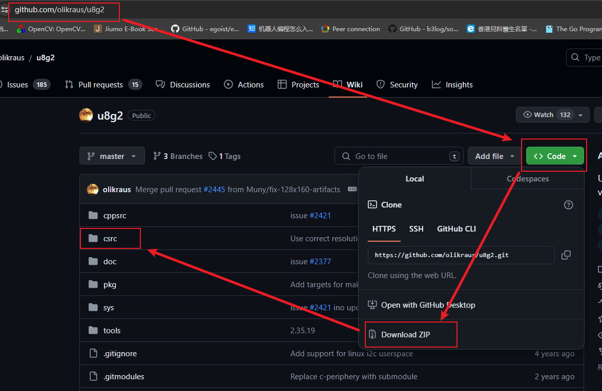</p><p data-lake-id="uf1190e30" id="uf1190e30"><br/></p><p data-lake-id="u564db2cc" id="u564db2cc"><span data-lake-id="u95101fc6" id="u95101fc6">删掉csrc文件夹中其它的屏幕驱动,只保留自己的屏幕驱动,例如我使用的屏幕驱动是ssd1306, 128x64的屏幕</span></p><p data-lake-id="u37ff55c9" id="u37ff55c9"><span data-lake-id="u2b901996" id="u2b901996">把csrc里</span><code data-lake-id="ub8f0855d" id="ub8f0855d"><span data-lake-id="u8abfd365" id="u8abfd365">u8x8_d_</span></code><span data-lake-id="u8a219ca9" id="u8a219ca9">开头所有文件都删掉，只保留</span><code data-lake-id="u41144228" id="u41144228"><span data-lake-id="ua3a4e3d2" id="ua3a4e3d2">u8x8_d_ssd1306_128x64_noname.c</span></code></p><p data-lake-id="uc883c298" id="uc883c298">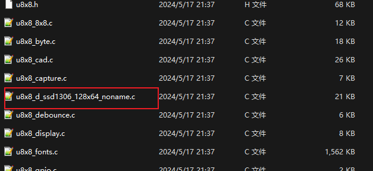</p><h3 data-lake-id="dhTCP" id="dhTCP"><span data-lake-id="uc7c68df3" id="uc7c68df3">精简u8g2_d_setup.c</span></h3><p data-lake-id="u58d2438b" id="u58d2438b"><span data-lake-id="u08461b44" id="u08461b44">打开u8g2_d_setup.c，只保留u8g2_Setup_ssd1306_i2c_128x64_noname_f函数（370行）。</span></p><p data-lake-id="u2da76a1d" id="u2da76a1d">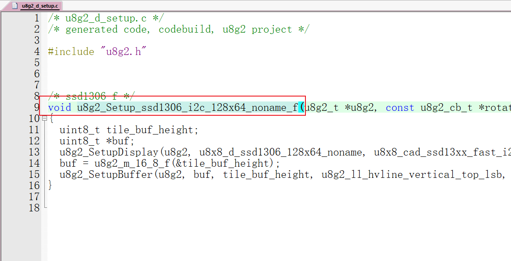</p><h3 data-lake-id="h8rsw" id="h8rsw"><span data-lake-id="u6a862f94" id="u6a862f94">精简u8g2_d_memory.c</span></h3><p data-lake-id="u91cb176a" id="u91cb176a"><span class="lake-fontsize-12" data-lake-id="uf81b7790" id="uf81b7790" style="color: rgb(77, 77, 77)">只需要保留u8g2_m_16_8_f(), 该函数在原文件第61行位置,  在上面的屏幕驱动设置中, 我们只调用了这个函数, 所以只保留这个函数</span></p><p data-lake-id="u196e8173" id="u196e8173"><span data-lake-id="ub593a32f" id="ub593a32f">其中1024代表最大的缓存</span></p><p data-lake-id="u30dbb093" id="u30dbb093">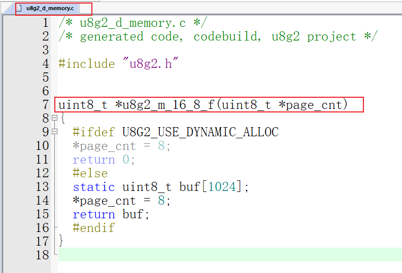</p><p data-lake-id="uedd56a42" id="uedd56a42"><br/></p><p data-lake-id="u67505456" id="u67505456"><br/></p><p data-lake-id="udc174432" id="udc174432"><br/></p><h2 data-lake-id="HyKgF" id="HyKgF"><span data-lake-id="u39944da2" id="u39944da2">参考main.c</span></h2><p data-lake-id="ufd0ba420" id="ufd0ba420"><span data-lake-id="uf024863d" id="uf024863d">打开下面这个网站,看看如何将它移植到stm32平台中</span></p><p data-lake-id="udd964ab1" id="udd964ab1"><a data-lake-id="u5ed81977" href="https://github.com/olikraus/u8g2/wiki/Porting-to-new-MCU-platform" id="u5ed81977" rel="noopener noreferrer" target="_blank"><span data-lake-id="ub7917328" id="ub7917328">https://github.com/olikraus/u8g2/wiki/Porting-to-new-MCU-platform</span></a></p><p data-lake-id="u7fb6e155" id="u7fb6e155"><span data-lake-id="u0e9902e5" id="u0e9902e5">​</span><br/></p><p data-lake-id="u8a14e87d" id="u8a14e87d">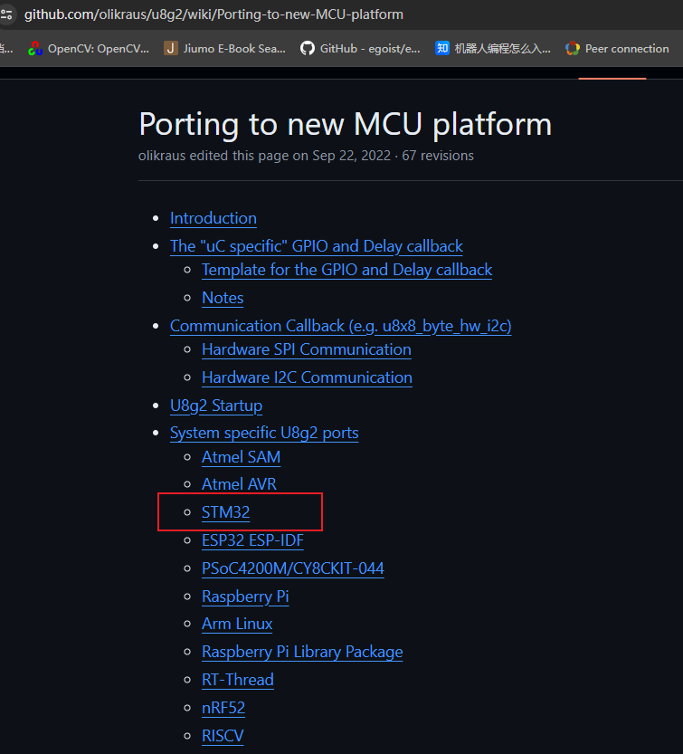</p><h3 data-lake-id="MQ4lv" id="MQ4lv"><span data-lake-id="u9624526d" id="u9624526d">下载stm32平台的main.c</span></h3><p data-lake-id="u28e7d027" id="u28e7d027"><a data-lake-id="ube70f4dc" href="https://github.com/nikola-v/u8g2_template_stm32f103c8t6/blob/master/Src/main.c" id="ube70f4dc" rel="noopener noreferrer" target="_blank"><span data-lake-id="u8442b795" id="u8442b795">https://github.com/nikola-v/u8g2_template_stm32f103c8t6/blob/master/Src/main.c</span></a></p><p data-lake-id="uada84e0a" id="uada84e0a">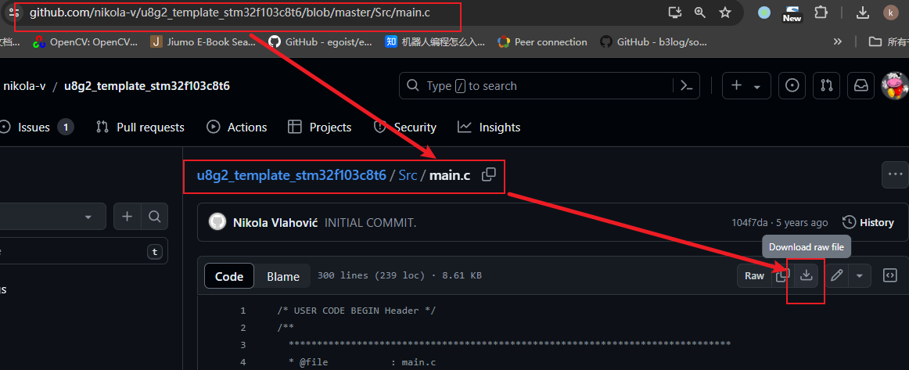</p><p data-lake-id="udbcb385a" id="udbcb385a"><br/></p><h2 data-lake-id="Di85Z" id="Di85Z"><span data-lake-id="u53dad999" id="u53dad999"> <br/></span><span data-lake-id="ubdf77c93" id="ubdf77c93">I2C协议屏幕移植</span></h2><p data-lake-id="u883bd6ff" id="u883bd6ff"><br/></p><h3 data-lake-id="nZfHo" id="nZfHo"><span data-lake-id="ua83f7915" id="ua83f7915">新增事件处理函数</span></h3><span class="yuque-card-unsupported">[codeblock]</span><h3 data-lake-id="LGdYR" id="LGdYR"><span data-lake-id="ub9c408ab" id="ub9c408ab">u8g2初始化</span></h3><span class="yuque-card-unsupported">[codeblock]</span><p data-lake-id="uf57e90fe" id="uf57e90fe"><span data-lake-id="ubc7b9594" id="ubc7b9594">u8g2_Setup_ssd1306_i2c_128x64_noname_f 是一个 U8G2 库中的函数名称,它有以下含义:</span></p><p data-lake-id="ub1bfbf51" id="ub1bfbf51"><span data-lake-id="u19d8f7e9" id="u19d8f7e9">​</span><br/></p><ul list="u43225529"><li data-lake-id="u6ebfd938" fid="uaf38d0aa" id="u6ebfd938"><span data-lake-id="uf4b047f8" id="uf4b047f8">u8g2: 这个是 U8G2 图形库的前缀,表示这是一个 U8G2 库中的函数。</span></li></ul><p data-lake-id="u4dc6feb7" id="u4dc6feb7"><span data-lake-id="ub7713999" id="ub7713999">​</span><br/></p><ul list="u8a63d024"><li data-lake-id="u46e856d1" fid="u558f07f7" id="u46e856d1"><span data-lake-id="ubeba9739" id="ubeba9739">Setup: 这个词表示这个函数是用来设置或初始化某些内容的。</span></li></ul><p data-lake-id="ubca3d230" id="ubca3d230"><span data-lake-id="u74bc6710" id="u74bc6710">​</span><br/></p><ul list="u826012b5"><li data-lake-id="ua74ff6a9" fid="uf8a71e16" id="ua74ff6a9"><span data-lake-id="uf1424237" id="uf1424237">ssd1306: 这是一个 OLED 显示驱动芯片的型号,SSD1306 是一款常见的 OLED 驱动芯片。</span></li></ul><p data-lake-id="u263898ba" id="u263898ba"><span data-lake-id="u1b7e051e" id="u1b7e051e">​</span><br/></p><ul list="u130a0b96"><li data-lake-id="u1f467ed9" fid="u16ed528c" id="u1f467ed9"><span data-lake-id="ue03b427d" id="ue03b427d">i2c: 这个词表示这个函数是用于 I2C 接口连接 OLED 显示屏的。若不带i2c这个名称，则为spi协议</span></li></ul><p data-lake-id="u7709bdc2" id="u7709bdc2"><span data-lake-id="u27cd6e35" id="u27cd6e35">​</span><br/></p><ul list="u3543d576"><li data-lake-id="ud760c2b1" fid="ubd49e892" id="ud760c2b1"><span data-lake-id="u36414b86" id="u36414b86">128x64: 这个数字表示 OLED 显示屏的分辨率,即 128 像素宽,64 像素高。</span></li></ul><p data-lake-id="u0ff1c592" id="u0ff1c592"><span data-lake-id="u95be2f91" id="u95be2f91">​</span><br/></p><ul list="ucb64fc77"><li data-lake-id="u977a15c2" fid="ua6a55721" id="u977a15c2"><span data-lake-id="u6aaec5d2" id="u6aaec5d2">noname: 这个词表示这个 OLED 显示屏是无品牌的型号。</span></li></ul><p data-lake-id="ue5c148a4" id="ue5c148a4"><span data-lake-id="u42134224" id="u42134224">​</span><br/></p><ul list="ubb34c797"><li data-lake-id="u3b84eebe" fid="u2ca8f149" id="u3b84eebe"><span data-lake-id="u696686e9" id="u696686e9">_f: 这个后缀表示这个函数是一个"full buffer"版本,可以在整个显示缓冲区上操作。最大的缓冲区默认设置为1024。 如果后缀是_1 则表示使用128字节的缓冲区， _2表示256字节缓冲区</span></li></ul><p data-lake-id="u3ce794aa" id="u3ce794aa"><span data-lake-id="u6bd814fb" id="u6bd814fb">​</span><br/></p><p data-lake-id="u9015b75e" id="u9015b75e"><span data-lake-id="u0c58025d" id="u0c58025d">参数中的</span><strong><span data-lake-id="ue5a8ed56" id="ue5a8ed56">u8x8_byte_sw_i2c表示使用i2c协议</span></strong></p><h3 data-lake-id="rP7Jb" id="rP7Jb"><span data-lake-id="u5da0ea22" id="u5da0ea22">绘制icheima</span></h3><span class="yuque-card-unsupported">[codeblock]</span><p data-lake-id="u7a1bfce8" id="u7a1bfce8"><br/></p><h2 data-lake-id="seDh0" id="seDh0"><span data-lake-id="u0e797e13" id="u0e797e13">SPI协议屏幕移植</span></h2><p data-lake-id="uaafa1793" id="uaafa1793"><br/></p><h3 data-lake-id="ORBUI" data-lake-index-type="2" id="ORBUI"><span data-lake-id="u3fffad7b" id="u3fffad7b">修改u8g2_d_setup.c</span></h3><p data-lake-id="u08dc1f77" id="u08dc1f77"><span data-lake-id="u21575065" id="u21575065">该步骤与前面相似，我们需要保留</span><span data-lake-id="u0968129f" id="u0968129f" style="color: #DF2A3F">u8g2_d_setup.c</span><span data-lake-id="u1e1a1e14" id="u1e1a1e14">文件中的</span><span data-lake-id="ud53ed804" id="ud53ed804" style="color: #DF2A3F">u8g2_Setup_ssd1306_128x64_noname_f函数，</span><span data-lake-id="u54153961" id="u54153961">注意这个函数不带i2c名称，则表示它是spi协议。</span></p><p data-lake-id="u2b40665e" id="u2b40665e"><span data-lake-id="u1cae151c" id="u1cae151c">​</span><br/></p><p data-lake-id="ud2100fcb" id="ud2100fcb"><span data-lake-id="u7000c411" id="u7000c411">完整的u8g2_d_setup.c文件内容如下，包含了我们上面用到的i2c协议，以及现在我们要用的spi协议</span></p><span class="yuque-card-unsupported">[codeblock]</span><p data-lake-id="ub61496fd" id="ub61496fd"><br/></p><h3 data-lake-id="qV9b6" data-lake-index-type="2" id="qV9b6"><span data-lake-id="u4f1d2731" id="u4f1d2731">添加事件处理函数</span></h3><span class="yuque-card-unsupported">[codeblock]</span><p data-lake-id="u619700cc" id="u619700cc"><br/></p><h3 data-lake-id="a70Sr" data-lake-index-type="2" id="a70Sr"><span data-lake-id="u71fdaf3c" id="u71fdaf3c">在main.c函数初始化</span></h3><p data-lake-id="ua52fceb8" id="ua52fceb8"><span data-lake-id="u4ac225e7" id="u4ac225e7">u8x8_byte_4wire_sw_spi: 表示我们使用的是4线SPI，分别为CLK,MOSI,CS,DC</span></p><p data-lake-id="ud3bedcc8" id="ud3bedcc8"><span data-lake-id="uf40bb10a" id="uf40bb10a">u8x8_byte_3wire_sw_spi：表示使用3线SPI，分别为CLK,MOSI,CS </span></p><p data-lake-id="ued25351f" id="ued25351f"><span data-lake-id="u442284d5" id="u442284d5">其中SW表示的是软件spi, 若想使用硬件spi，需要参考u8x8_byte_4wire_sw_spi函数自己实现</span></p><span class="yuque-card-unsupported">[codeblock]</span><p data-lake-id="ubcae0732" id="ubcae0732"><br/></p><p data-lake-id="u3b53a5b7" id="u3b53a5b7"><br/></p><h2 data-lake-id="F5bfM" id="F5bfM"><span data-lake-id="u0a82a901" id="u0a82a901">官方例程</span></h2><p data-lake-id="ubb7302c2" id="ubb7302c2"><span data-lake-id="u5c8ba7b8" id="u5c8ba7b8">在源码的路径下，有非常多的arduino例程，如果我们想用的话，需要将它们移植到我们自己的平台上</span></p><p data-lake-id="u1292df3c" id="u1292df3c"><span data-lake-id="u38cf19d4" id="u38cf19d4">​</span><br/></p><p data-lake-id="u32ab5827" id="u32ab5827">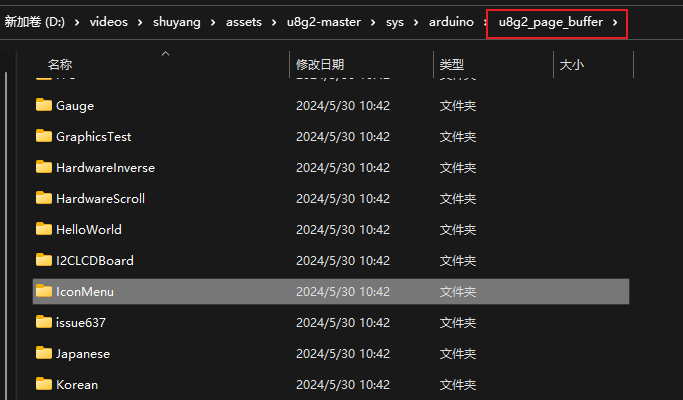</p><h3 data-lake-id="OAQxy" data-lake-index-type="2" id="OAQxy"><span data-lake-id="uc8f5662d" id="uc8f5662d">天气例程</span></h3><p data-lake-id="uccff99f6" id="uccff99f6" style="text-align: center">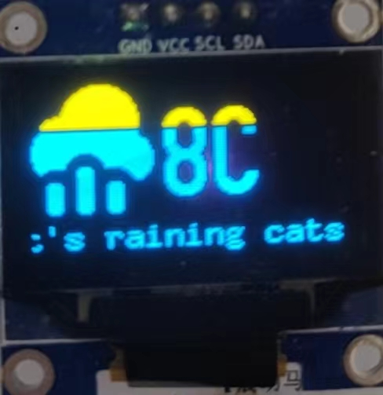</p><span class="yuque-card-unsupported">[codeblock]</span><p data-lake-id="u68901159" id="u68901159"><br/></p><h3 data-lake-id="eC9Dm" data-lake-index-type="2" id="eC9Dm"><span data-lake-id="u4369ea1e" id="u4369ea1e">IconMenu例程</span></h3><p data-lake-id="u7dc5975d" id="u7dc5975d" style="text-align: center">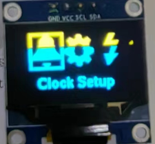</p><span class="yuque-card-unsupported">[codeblock]</span><p data-lake-id="u49196022" id="u49196022"><span data-lake-id="u5f669123" id="u5f669123">按键示例代码</span></p><span class="yuque-card-unsupported">[codeblock]</span><p data-lake-id="u8cda28b4" id="u8cda28b4"><span data-lake-id="u836acc82" id="u836acc82">参考代码：</span></p><p data-lake-id="uc716c601" id="uc716c601"><a class="yuque-card-link" href="../../_assets/d6ccb1c7202b51e817a66053.zip">09_GD32_IIC_u8g2_menu.zip</a></p><h2 data-lake-id="EswrL" id="EswrL"><span data-lake-id="ud32b0fcf" id="ud32b0fcf">玩只鸟</span></h2><p data-lake-id="uee0c695d" id="uee0c695d"><span data-lake-id="u1fe978bb" id="u1fe978bb">参考代码：</span></p><p data-lake-id="udcfeb4ba" id="udcfeb4ba"><a class="yuque-card-link" href="../../_assets/a5b275a3ddb5b358358fef54.zip">08_GD32_IIC_u8g2_bird.zip</a></p><p data-lake-id="u55bd400f" id="u55bd400f"><br/></p><p data-lake-id="u88160aac" id="u88160aac"><span data-lake-id="ue4a0937c" id="ue4a0937c">主要思路包含三个步骤：</span></p><ol list="ue00f880e"><li data-lake-id="ub8ee8fec" fid="u5411e5f0" id="ub8ee8fec"><span data-lake-id="ud9428b30" id="ud9428b30">鸟：</span></li></ol><ol data-lake-indent="1" list="ue00f880e"><li data-lake-id="u7c492237" fid="u5411e5f0" id="u7c492237"><span data-lake-id="u0f7945e2" id="u0f7945e2">默认自由落体运动，仅仅改变y的坐标</span></li><li data-lake-id="uf1da1d4e" fid="u5411e5f0" id="uf1da1d4e"><span data-lake-id="u2c2238c2" id="u2c2238c2">当按键按下的时候，鸟仅改变y的初值</span></li></ol><ol list="ue00f880e" start="2"><li data-lake-id="ub0d7ace8" fid="u5411e5f0" id="ub0d7ace8"><span data-lake-id="u6a015739" id="u6a015739">水管：</span></li></ol><ol data-lake-indent="1" list="ue00f880e"><li data-lake-id="u1c1cd406" fid="u5411e5f0" id="u1c1cd406"><span data-lake-id="u2c45c75f" id="u2c45c75f">按照一定时间间隔从左向右移动</span></li></ol><ol list="ue00f880e" start="3"><li data-lake-id="ub5428aca" fid="u5411e5f0" id="ub5428aca"><span data-lake-id="ua2ec4040" id="ua2ec4040">判断鸟和水管是否发生碰撞：</span></li></ol><ol data-lake-indent="1" list="ue00f880e"><li data-lake-id="u4ef502eb" fid="u5411e5f0" id="u4ef502eb"><span data-lake-id="ue2f1c956" id="ue2f1c956">若碰撞，则游戏结束</span></li><li data-lake-id="u78327ebc" fid="u5411e5f0" id="u78327ebc"><span data-lake-id="ub5dc39e1" id="ub5dc39e1">若没有碰撞，游戏继续</span></li></ol><p data-lake-id="u6925c723" id="u6925c723"><span data-lake-id="u7cc1fdab" id="u7cc1fdab">​</span><br/></p><h3 data-lake-id="iIoYY" data-lake-index-type="2" id="iIoYY"><span data-lake-id="ue6aefcfe" id="ue6aefcfe">环境准备</span></h3><h4 data-lake-id="rGUij" data-lake-index-type="2" id="rGUij"><span data-lake-id="u25f1e32f" id="u25f1e32f">准备鸟的图片</span></h4><p data-lake-id="u0314158c" id="u0314158c"><span data-lake-id="u19290f14" id="u19290f14">在百度上，随便找只鸟</span><span data-lake-id="u11cf18da" id="u11cf18da"> 它是这种彩色的，可能不太符合我们单色屏幕要求，打开系统自带的画图软件，</span></p><ol list="u2b00e170"><li data-lake-id="u2da594af" fid="u8830ce8d" id="u2da594af"><span data-lake-id="ue5f7f90e" id="ue5f7f90e">将它转成单色图</span></li><li data-lake-id="ud8cea8d3" fid="u8830ce8d" id="ud8cea8d3"><span data-lake-id="u29bf8fad" id="u29bf8fad">大小缩小一点</span></li></ol><p data-lake-id="u1a4c35d7" id="u1a4c35d7">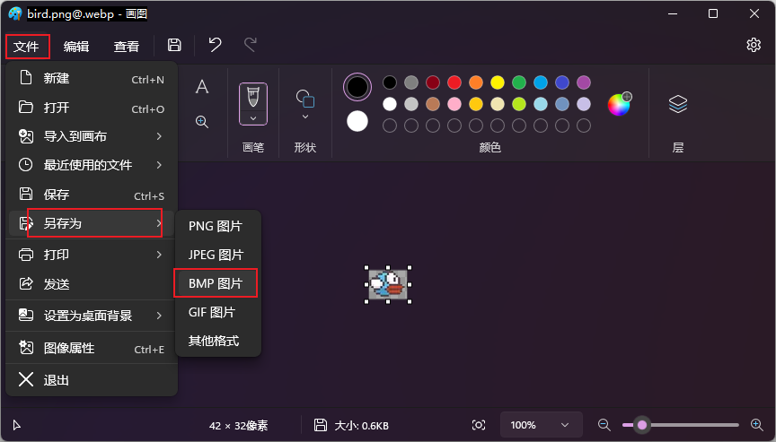</p><p data-lake-id="ub6d02100" id="ub6d02100"><span data-lake-id="u3813d0bb" id="u3813d0bb">将彩色图转成单色模式</span></p><p data-lake-id="ua88e4bb4" id="ua88e4bb4">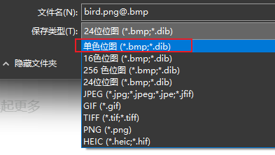</p><p data-lake-id="uf43c96f8" id="uf43c96f8"><br/></p><p data-lake-id="u9646c25e" id="u9646c25e">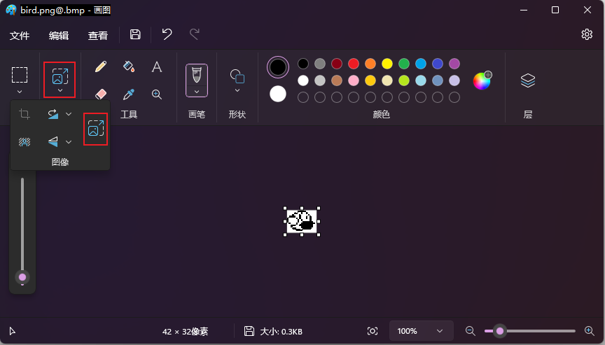</p><p data-lake-id="u21d8aeeb" id="u21d8aeeb">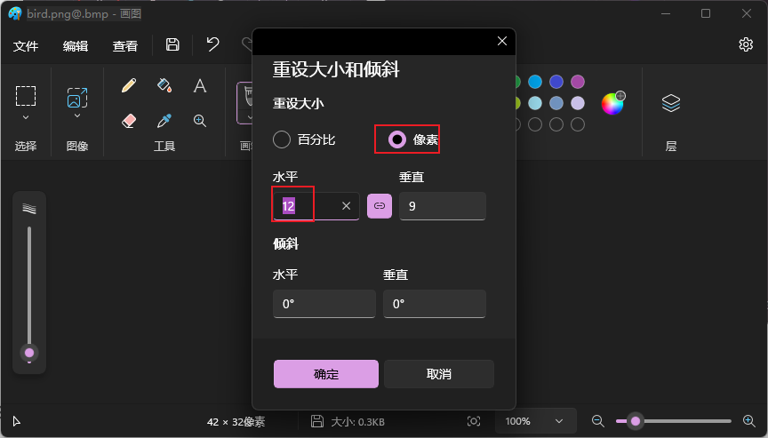</p><p data-lake-id="u332a9df4" id="u332a9df4"><br/></p><p data-lake-id="u702a3a16" id="u702a3a16"><span data-lake-id="u1e288cb6" id="u1e288cb6">最终我们会得到一只比较小的像素鸟：</span></p><p data-lake-id="u2236fbe6" id="u2236fbe6"><br/></p><p data-lake-id="u23b9371c" id="u23b9371c"><span data-lake-id="u05186453" id="u05186453">将图片转成C代码</span></p><p data-lake-id="ue5949ae5" id="ue5949ae5">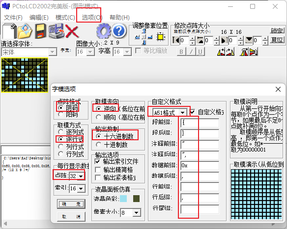</p><p data-lake-id="ue17c20af" id="ue17c20af">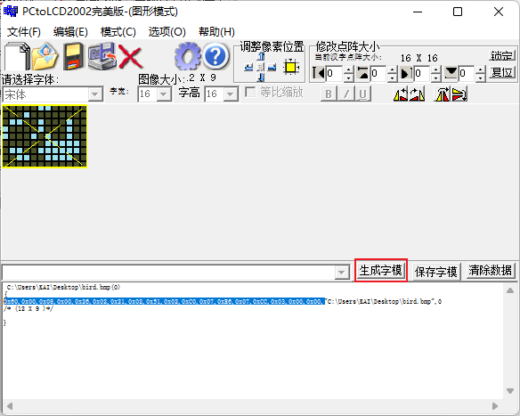</p><p data-lake-id="u80925007" id="u80925007"><span data-lake-id="u29681e5f" id="u29681e5f">将上述生成的C代码数组，复制到代码里面就可以使用了</span></p><span class="yuque-card-unsupported">[codeblock]</span><p data-lake-id="u7804257a" id="u7804257a"><span data-lake-id="u3a507a49" id="u3a507a49">​</span><br/></p><h4 data-lake-id="oIzxM" data-lake-index-type="2" id="oIzxM"><span data-lake-id="u374bf787" id="u374bf787">设置初始值</span></h4><p data-lake-id="uecb12aeb" id="uecb12aeb"><br/></p><span class="yuque-card-unsupported">[codeblock]</span><h3 data-lake-id="ABu1N" data-lake-index-type="2" id="ABu1N"><span data-lake-id="u51ee71b2" id="u51ee71b2">鸟</span></h3><span class="yuque-card-unsupported">[codeblock]</span><h3 data-lake-id="Gzuxt" data-lake-index-type="2" id="Gzuxt"><span data-lake-id="ub8d785ee" id="ub8d785ee">水管</span></h3><span class="yuque-card-unsupported">[codeblock]</span><p data-lake-id="ufd7a3a46" id="ufd7a3a46"><span data-lake-id="ufc873714" id="ufc873714">若水管超出屏幕了，我们就把水管的坐标重置</span></p><span class="yuque-card-unsupported">[codeblock]</span><h3 data-lake-id="LR52L" data-lake-index-type="2" id="LR52L"><span data-lake-id="u1bb93586" id="u1bb93586">碰撞检测 </span></h3><p data-lake-id="ub1c594b5" id="ub1c594b5"><br/></p><span class="yuque-card-unsupported">[codeblock]</span><p data-lake-id="ud564aec9" id="ud564aec9"><br/></p><h3 data-lake-id="yjjpO" data-lake-index-type="2" id="yjjpO"><span data-lake-id="u6c47656f" id="u6c47656f">参考代码</span></h3><span class="yuque-card-unsupported">[codeblock]</span>